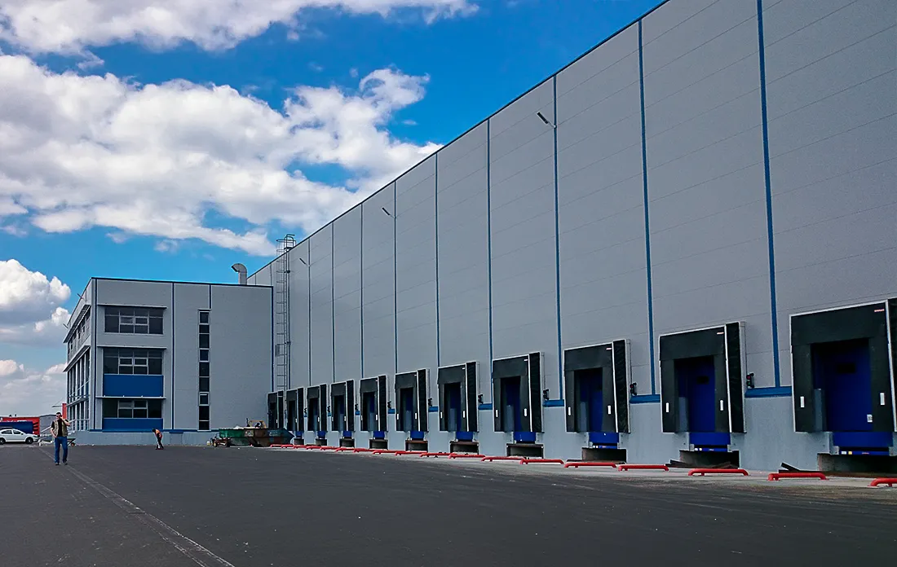

Подкатегория
Фасады распределительных центров
Строительство распределительного центра завершается вводом в работу, после чего товар принимают и отгружают без перерывов. Фасад должен сразу закрыть тепловой контур и не требовать отделки. Ниже представлен объект, где Frontside поставил систему FRONTBASE, а корпус возводил генподрядчик.

Реализованные объекты
Применяемые системы
Для распределительных центров Frontside предлагает FRONTBASE, где стеновые и кровельные панели образуют единый контур здания. Толщину панели задает проект, и от нее, по данным каталога Frontside, зависит предел огнестойкости EI от 45 до 150 минут.
FRONTBASE
Стеновые и кровельные панели образуют единый контур здания. Толщину панели задает проект, и от нее, по данным каталога Frontside, зависит предел огнестойкости EI от 45 до 150 минут.
ПодробнееКакие задачи Frontside решает при строительстве логистического комплекса
Распределительный центр класса А работает по графику отгрузок, и остановить его ради ремонта стен нельзя. Так же работают склады для маркетплейсов. В здании сортировочного центра стены сохраняют тепло в большом объеме и обеспечивают пожарную безопасность.
Фасадная панель FRONTBASE выполняет функцию готовой стены и кровли, не требует отделки снаружи и внутри, класс конструкции К0, материалы НГ. Длина панелей до 12 500 мм подходит для протяженных корпусов, которые возводят при строительстве логопарка. Для логистического комплекса «Быково» в Московской области выполнено 30 000 м² фасадов, оборудованных этой системой.
Проект распределительного центра можно передать нам с одним архитектурным решением, и мы выпустим документацию на узлы. Если проект логистического центра доведен до АС, проверим узлы с точки зрения производства. В проекте сортировочного центра с готовыми КМ и АР адаптируем систему к рассчитанному каркасу. При проектировании логистических центров цвет панелей по RAL подбираем под архитектурное решение здания.
Комплект производим под объект, привозим партиями по ходу стройки и ведем шеф-монтаж с контролем качества. Если строительство логистического парка идет очередями, поставки планируем под каждую из них. Корпуса хранения, которые включает строительство логистического центра, показаны в подборке про складские комплексы, все объекты есть на странице про фасады складов
Другие подкатегории раздела
Расскажите о вашем объекте
Поможем подобрать решение под архитектуру, сроки и эксплуатацию
- Телефон
- +7 (495) 642-80-91
- Почта
- info@frontside.ru